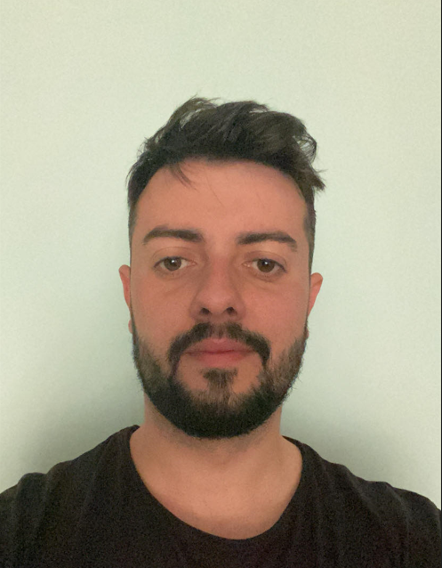

Ertan Sadkaev

Summary
I am dynamic and ambitious person with a passion for technology and a strong desire to grow in the field of JavaScript programming and web development. Positive-minded, quick learner, and eager to learn new things.
Education
- Bachelor's degree of Transport Equipment and Technologies - University of Ruse, Bulgaria
- Software University (SoftUni)
- System Programming - PGEE "Apostol Arnaudov" - Ruse, Bulgaria
Work Experience
- ALORICA BULGARIA EOOD
06/06/2022 - CURRENT - Sofia, Bulgaria
- Dordon Food House
2016 - 2017 - Dordon, United Kingdom
Skills
- Microsoft Excel
- Microsoft Word
- JavaScript
- HTML
Other